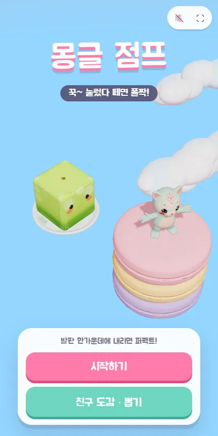
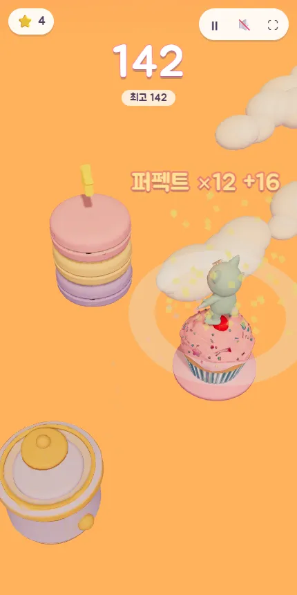
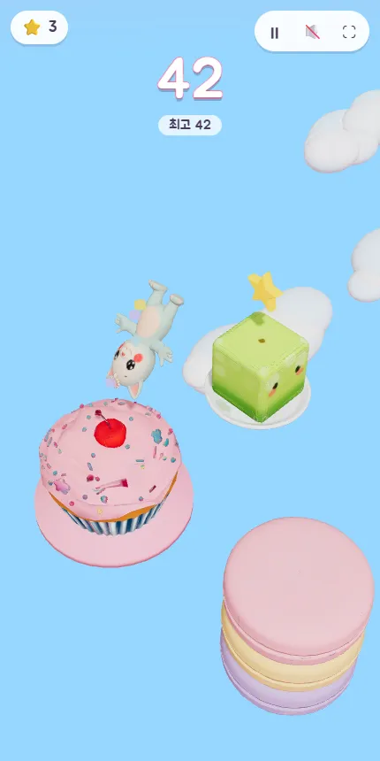
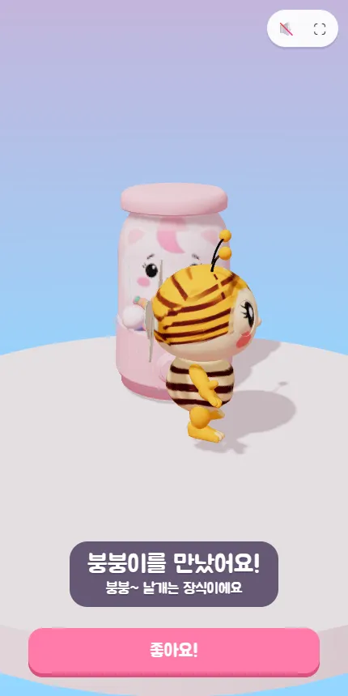

✈️ 액션 게임 · 무료 · 설치 없음
몽글 점프
“꾹~ 눌렀다 떼면 폴짝!”
- 한 판 1~5분
- 3D 친구 6명
- 발판 8가지
- 최고 기록·별·친구 저장
회원가입 없이 누르면 바로 시작돼요
어떤 게임인가요?
하늘에 둥실 떠 있는 컵케이크, 마카롱, 딸기 케이크 위를 몽글이가 건너가요. 화면을 꾹 누르고 있으면 몽글이가 납작하게 웅크리며 힘을 모으고, 손을 떼면 공중제비를 돌며 폴짝 뛰어요. 오래 누를수록 멀리 가요.
발판 한가운데에 내리면 「퍼펙트!」. 퍼펙트가 이어지면 점수가 2, 4, 6, 8점으로 커지고 효과음도 한 음씩 올라가요. 멀리 갈수록 하늘이 아침에서 낮, 노을, 별이 반짝이는 밤으로 바뀌어요.
가끔 발판 위에 별이 떠 있어요. 별을 모아 캡슐 뽑기를 돌리면 햄스터, 젤리 토끼, 아기 펭귄 같은 새 친구가 나오고, 그 친구와 함께 뛸 수 있어요. 어떤 발판은 위에서 잠깐 기다리면 깜짝 선물을 줘요.
이렇게 해요
- STEP 1
꾹 누르고 있어요
화면 아무 곳이나 누르고 있으면 몽글이가 힘을 모아요. 다음 발판까지 거리를 눈으로 재 보세요.
- STEP 2
손을 떼면 폴짝
손을 떼는 순간 뛰어요. 발판 한가운데에 내리면 퍼펙트, 발판 밖으로 떨어지면 한 판이 끝나요.
- STEP 3
별을 모아 친구를 뽑아요
별 30개로 캡슐을 뽑으면 아직 못 만난 친구가 나와요. 친구 도감에서 함께 뛸 친구를 골라요.



🌟 이런 것도 있어요
- 퍼펙트 연속: 이어질수록 점수가 커지고, 몽글이 뒤로 반짝이 꼬리가 생겨요
- 수상한 발판: 선물 상자와 오르골, 북 위에서는 무슨 일이 생길까요?
- 친구 도감: 못 만난 친구는 그림자로만 보여요
떨어지면 「살짝 짧았어요」「살짝 멀었어요」처럼 알려 줘서 다음 판에 바로 고칠 수 있어요.
이런 분께 추천해요
- 짧게 한 판씩 기분 전환하고 싶은 분
- 귀여운 캐릭터를 모으는 걸 좋아하는 분
- 가족이나 친구와 최고 기록을 겨뤄 보고 싶은 분
발판까지 거리가 비슷하면 누르는 시간도 비슷해요. 처음 몇 번은 「조금 짧게, 조금 길게」를 맞춰 보며 감을 잡아 보세요.
📱 어떤 기기에서 하면 좋을까요?
- 가장 좋아요휴대폰 세로·가로 모두
손가락 하나로 누르고 떼기만 하면 돼요. 오른쪽 위 ⛶ 단추로 전체 화면이 돼요.
- 가장 좋아요태블릿 세로·가로 모두
3D 발판과 친구들이 크게 보여요.
- 좋아요컴퓨터·노트북 마우스·키보드
마우스를 누르고 떼거나, 스페이스 키를 누르고 떼서 뛰어요. 끝난 화면에서 Enter로 바로 다시 해요.
오른쪽 위 메뉴(⋮ 또는 ···)에서 「다른 브라우저로 열기」를 눌러 크롬이나 사파리로 열어 주세요. 앱 안에서는 전체 화면이 안 되고 저장이 풀릴 수 있어요.
🍎 아이폰·아이패드에서는
- ① 사파리로 열기
카카오톡이나 네이버 앱 안에서는 화면이 좁아요. 「다른 브라우저로 열기」나 사파리로 열어 주세요.
- ② 홈 화면에 추가하기
아이폰은 전체 화면 단추가 없어요. 공유 버튼(□↑) → 「홈 화면에 추가」로 열면 주소창 없이 꽉 찬 화면이 돼요.
- ③ 소리
무음 스위치가 켜져 있으면 소리가 나지 않아요. 효과음은 오른쪽 위 스피커 단추로 켜고 끌 수 있어요.
🤖 갤럭시 등 안드로이드에서는
크롬이나 삼성 인터넷으로 열고, 오른쪽 위 ⛶ 단추를 누르면 전체 화면으로 바뀌어요. 처음 열 때 3D 모델(약 5MB)을 받느라 몇 초 걸릴 수 있어요.
▶ 바로 해 보기
설치도, 회원가입도 필요 없어요.
몽글 점프 시작하기game.edoori.co.kr/monggle/